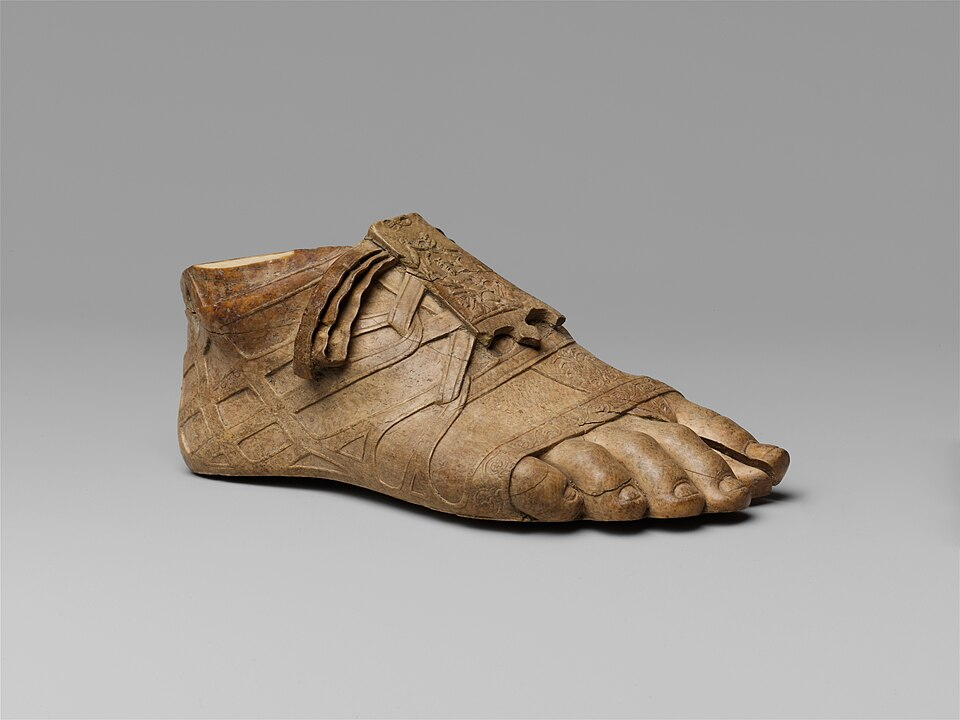

⛏My foot hurts after walking across the desert biome.
砂漠バイオームを歩き回った後、足が痛い。
/maɪ fʊt hɝts ˈæftɚ ˈwɔkɪŋ əˈkrɑs ðə ˈdɛzɚt baɪˈoʊm/
- 「foot」の語末子音/t/が未開放となる（次に子音がくるため）[fʊt̚ hɝts]フット ハーツ
- 「the」は機能語で弱形/ðə/に弱化される
マイ フット ハーツ アフター ウォーキング アクロース ザ デザート バイオーム

⛏My foot hurts after walking across the desert biome.
砂漠バイオームを歩き回った後、足が痛い。
⛏The zombie spawner is at the foot of the cave.
ゾンビスポーナーは洞窟の入口にある。
⛏I built my house fifty feet away from the ocean.
海から50フィート離れた場所に家を建てた。
I need stronger boots to protect my feet from lava.
溶岩から足を守るため、より強いブーツが必要です。
The zombie's feet splashed through the water.
ゾンビの足が水を通して飛び散りました。
We are footing the bill for the new server maintenance.
新しいサーバーメンテナンスの請求書を支払っている。
He is footing the repair costs for the narrow bridge.
彼は狭い橋の修理費用を支払っている。
We were footing the cost while building the massive castle.
巨大な城を建築しながら費用を負担していた。
She was footing the expedition expenses while searching for ancient artifacts.
彼女は古代の遺物を探しながら探索費用を支払っていた。
By the time the server crashed, we had been footing the entire operation.
サーバーがクラッシュするまでに、私たちは全体の運営を負担していた。
They had been footing all the travel costs before reaching the mountain base.
彼らは山のベースに到達する前に、全ての旅行費用を支払っていた。
I have footed across biomes for miles searching for rare ore deposits.
レアな鉱石鉱床を探して何マイルもバイオーム中を歩いた。
We have footed the entire construction cost for the massive stronghold.
巨大な要塞の全体的な建設費用を支払った。
By the time we reached spawn, we had footed through the Nether for several hours.
スポーンに到達するまでに、我々は数時間もネザーを踏破していた。
They had footed the bill for all mining equipment before the season ended.
シーズン終了前に、彼らはすべての採掘用具の請求書を支払っていた。
The adventurers have been footing across the desert all day looking for ancient ruins.
冒険者たちは古代の遺跡を探して一日中砂漠を歩き続けている。
We have been footing the maintenance costs all throughout this entire season.
このシーズン全体を通してメンテナンス費用を支払い続けている。
I'll foot the repairs for the farm after the mobs destroy everything.
モブが全てを破壊した後、農場の修理代を支払うよ。
They will foot across the End looking for the exit portal.
彼らは出口ポータルを探してエンドを歩き回るだろう。
We'll be footing across the mountain range tomorrow during our mining expedition.
明日、採掘遠征の間、山脈中を歩き回っているだろう。
He will be footing carefully through the minefield of cacti on his next adventure.
彼の次の冒険でサボテンの地雷原を注意深く歩き回るだろう。
By next week, you will have footed through every biome in the entire world.
来週までに、世界中のあらゆるバイオームを踏破しているだろう。
We will have footed the entire cost of the server by the end of this month.
今月末までに、サーバーの全費用を支払っているだろう。
⛏Let's go to the village on foot instead of riding horses.
馬に乗る代わりに、徒歩で村に行こう。
⛏You shouldn't set foot in the nether without armor.
アーマーなしでネザーに足を踏み入れてはいけない。
⛏The dark oak forest is at the foot of the mountain range.
ダークオークの森は山脈の麓にある。